Howdy, my name is Alexander Crabtree, and welcome to my portfolio website!
I'm currently based in Texas, I am a proud alumnus of Texas A&M University, where I earned a Bachelor of Science in Mathematics with double minors in Physics and Astrophysics.
My passion for these fields led me to join the Texas A&M AGGIENOVA research group as a research assistant.
In this role, I developed a data pipeline to scrape, clean, and organize astronomical data on supernovae and created Python queries to generate visualization reports, including light curves, color light curves, and color-color graphs.
This experience ignited my interest in data science, which has since become a significant focus of my career.
I now work at Lone Star Analysis as a Data Analyst and am also pursuing a Master of Science in Applied Physics at Johns Hopkins University, with an expected graduation in Summer 2026.
In my free time, I love to challenge myself by learning new things, reading, running, and spending time with my birds.
Thank you for visiting my site!
M.S. in Applied Physics
Johns Hopkins, Baltimore, MD
Jan 2024-Present
B.S. in Mathematics
Minors in Physics and Astrophysics
Texas A&M University, College Station, TX
Aug 2017-May 2021
IBM Data Analyst Professional Certificate
Coursera, May 2022
Analytics Engineer
Lone Star Analytics, Addison TX
Jun 2025-Present
Data Analyst
Lone Star Analytics, Addison TX
Feb 2023-Jun 2025
Associate Data Analyst
Lone Star Analytics, Addison TX
Jun 2022-Feb 2023
Physics/Math Tutor
Education One, Frisco, TX
Sep 2021-June 2022
Research Analyst
Texas A&M AGGIENOVA, College Station, TX
Aug 2020-Sep 2021
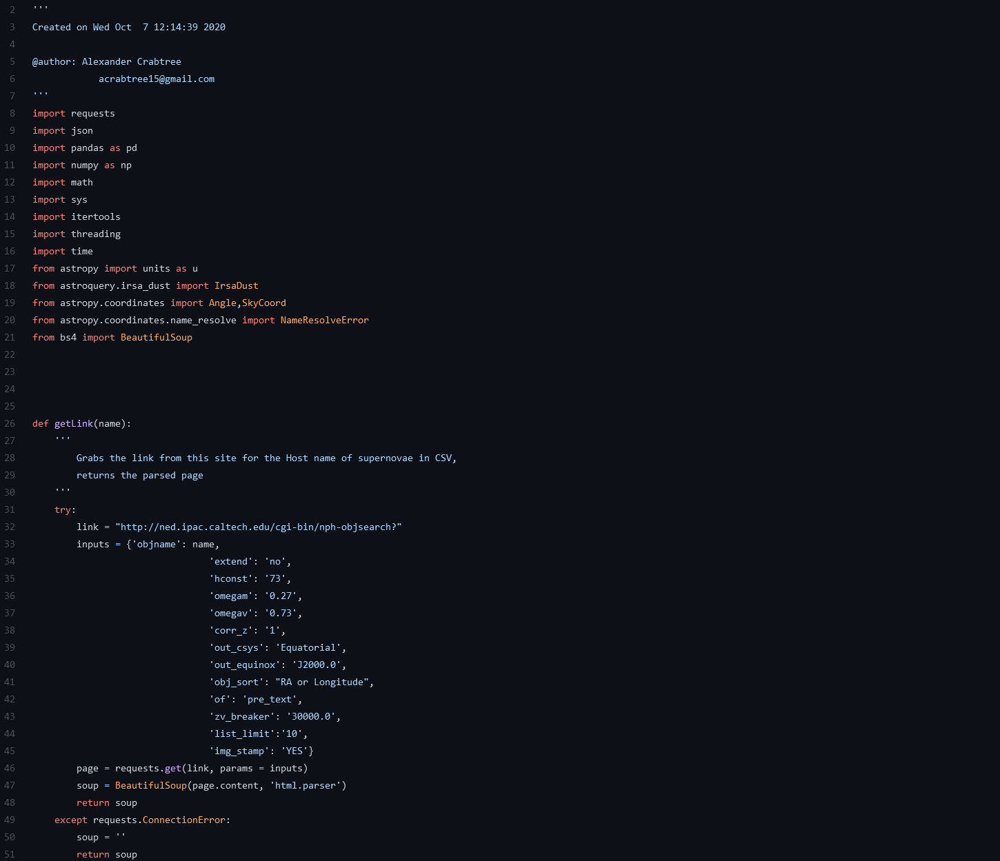
Developed Python code to web scrape Astronomy data from Astronomy databases such as the NASA/IPAC Extragalactic Database (NED) and the Transient Name Server. Made use of Astropy, Astroquery, Pandas, and BeautifulSoup Python libraries.
Python
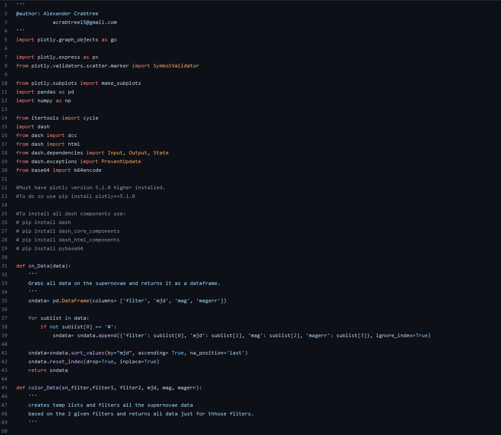
Used Pandas and Plotly-Dash in Python script to read data on file for all supernovae names in Swift Supernovae Database. The app takes inputs for 3 different graph types and returns the graphs Filter Light Curve, Color Light Curve, and Color-Color Diagram.
Python | Dash
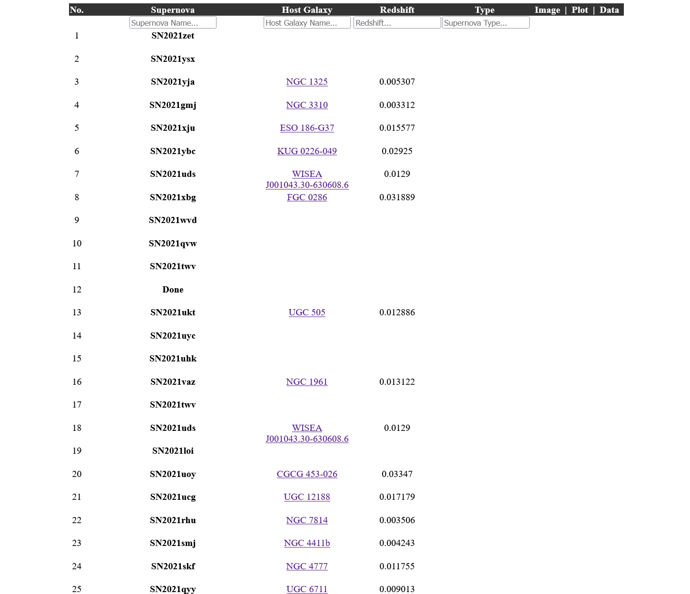
Made use of astronomical data collected with my Swift Data Web Scraper to build upon the Swift Supernovae Database. I also developed dynamic search bars to more easily find data using JavaScript.
HTML | CSS | JavaScript
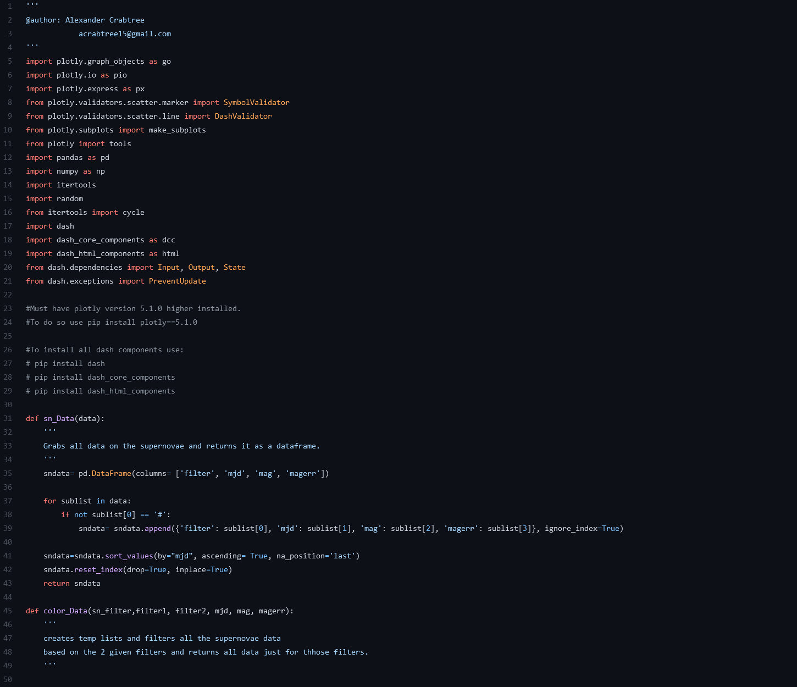
Used Python's Panda Library with Dash to read data for all supernovae names in real time after supernova type and date range is given. The resulting graph is a color-color diagram for the supernovae type, user can switch between any of the 15 colors on both the y and x axis.
Python | Dash
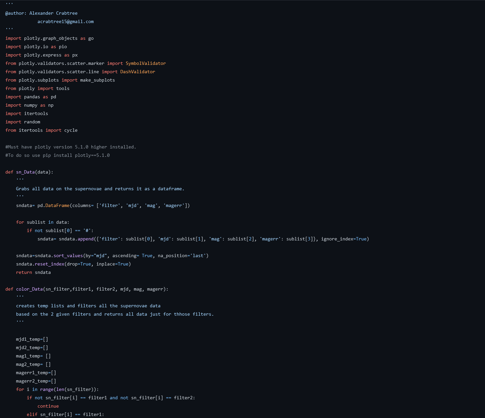
Used Pandas and Plotly in Python script to read data on file for all supernovae names in Swift Supernovae Database. The graph created is a color light curve graph with filter light curves to compare to associated color.
Python
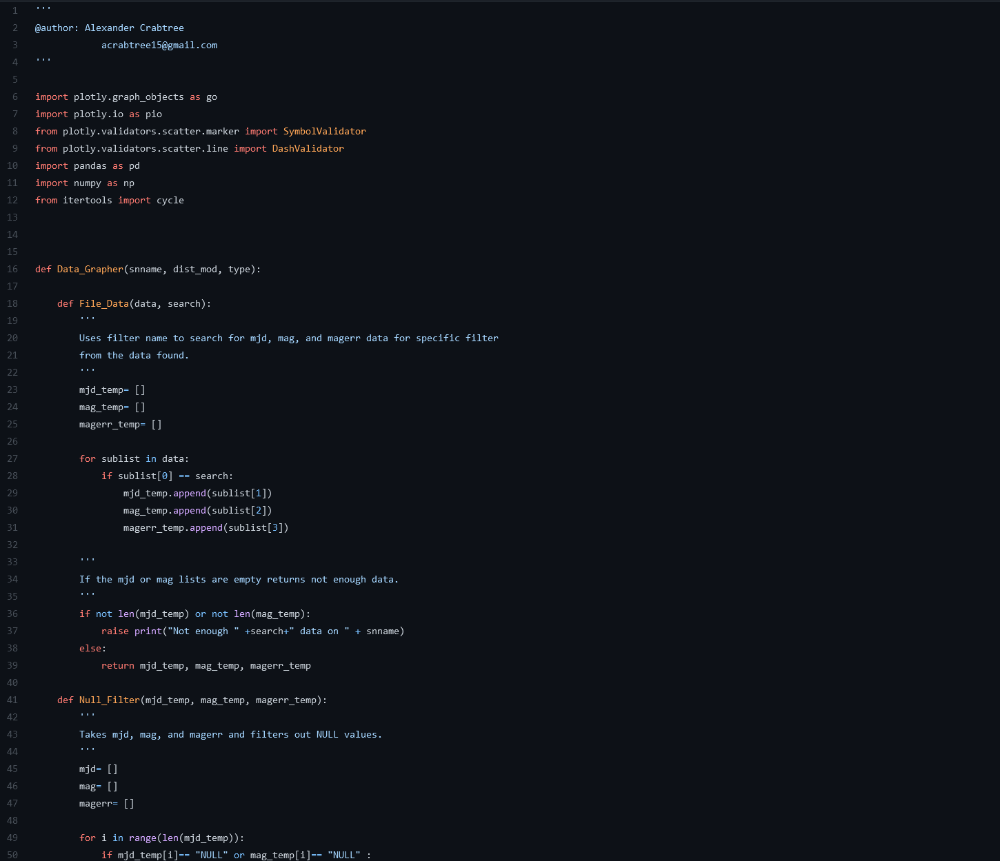
Employed the Pandas and Plotly Python libraries to design code to read data on file for all supernovae names in Swift Supernovae Database. Then proceeds to graph all available data on the UVOT filters.
Python
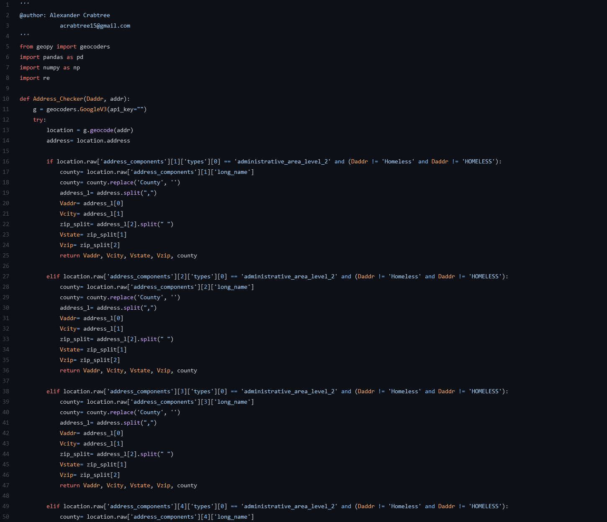
Utilized Python's Pandas and Geopy libraries and Google's Geocode API to develop code that takes given address data and validates their addresses with the Geocode API.
Python | Google Geocode API
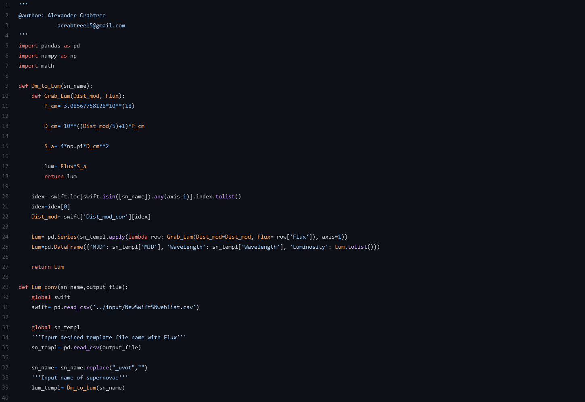
Created code to convert Flux data to Luminosity. This code was implemented into the larger AGGIENOVA pipeline and used to turn MJD, Wavelength, Flux data to MJD, Wavelength, Luminosity Data.
Python
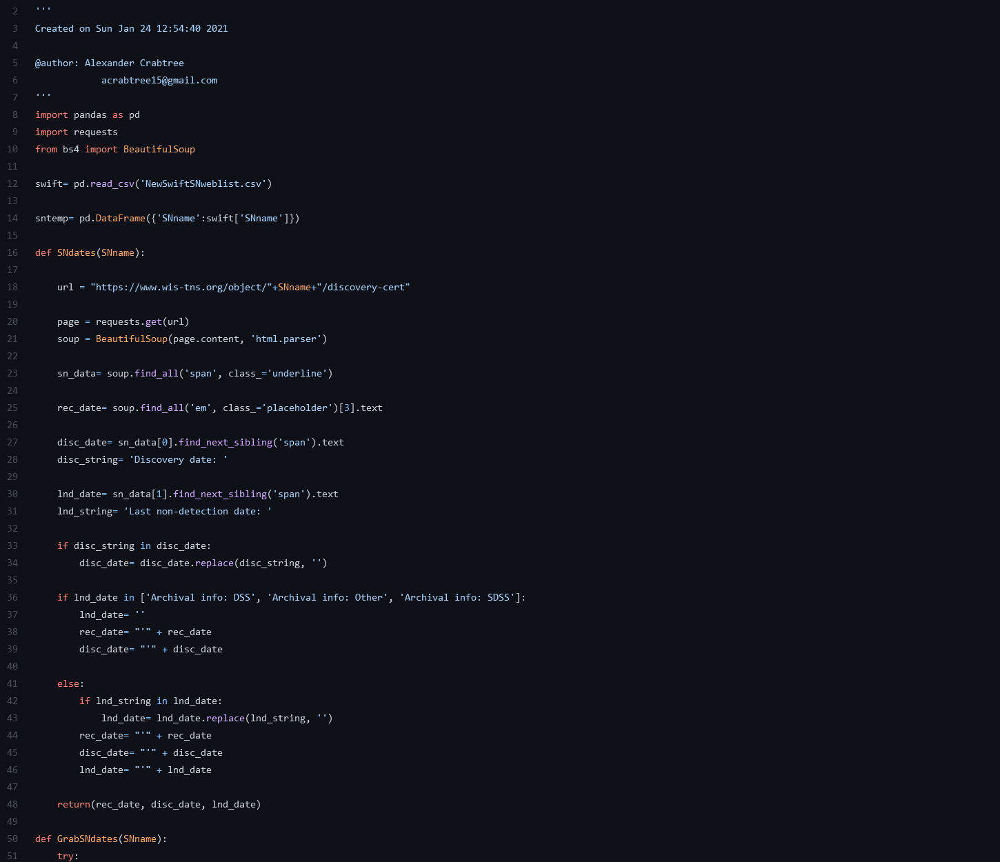
Made use of Python's Pandas and BeautifulSoup libraries to generate code that web scrapes Supernovae date data from the Transient Name Server.
Python
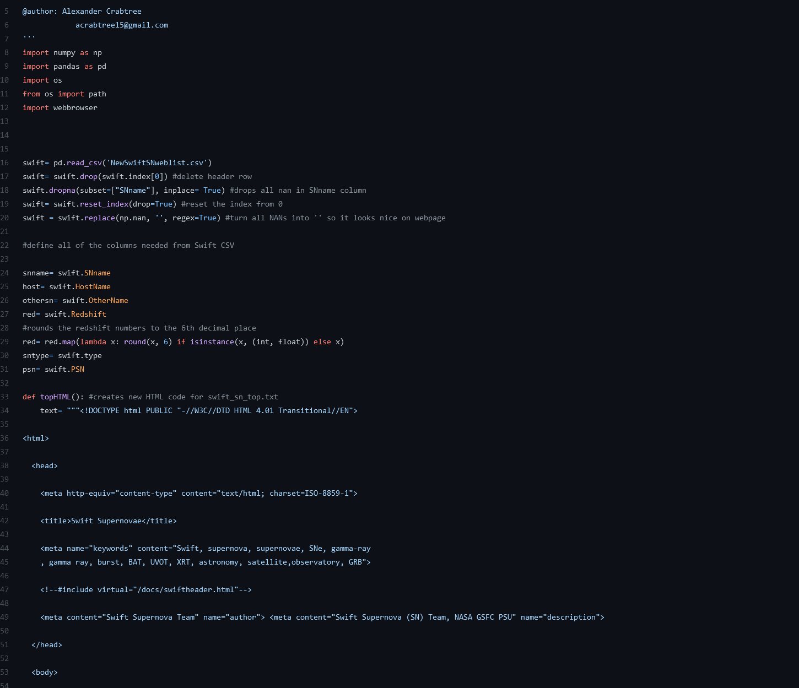
Developed code in Python to go through a list of Supernovae names then alter a section of HTML code depending on the data present for each Supernova. The HTML code was then combined into an index.html file.
Python | HTML
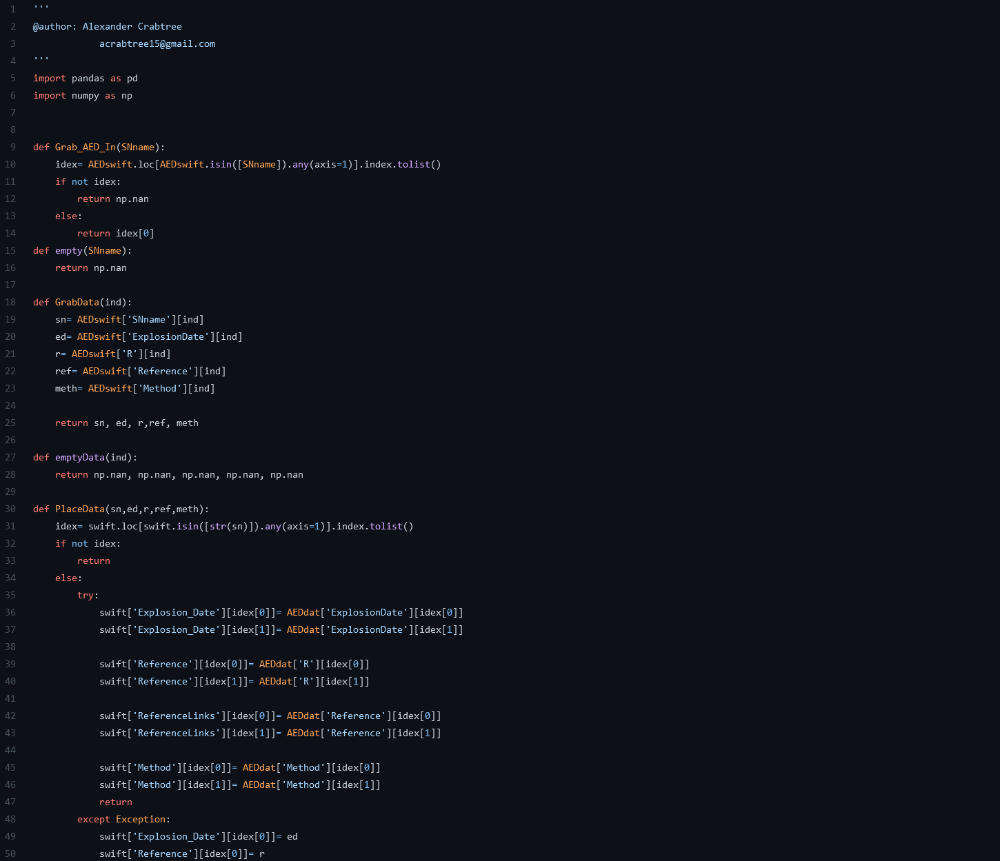
Using the Pandas library, developed code to find Supernovae names in separate .csv files then transfer the Explosion Dates for those names from one .csv file to the other.
Python
All graphs are created using supernovae from the Swift's Optical/Ultraviolet Supernova Archive (SOUSA). Below are a few light curve graphs I created for type Ib, Ic, and IIP supernovae using primarily the Plotly Python Library. There is also a link that takes you to a site where you can further explore the graphs I've made. These graphs are best viewed on a computer, to select a specific supernovae or supernovae group in the graphs below double click on the name in the legend.
Alexcrabt21@gmail.com